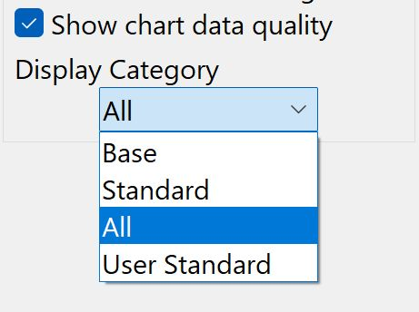

Display Category

The Chart Panel Hamberger (3 horizontal bars) is always found in the lower right corner of a chart canvas.

The Display Category drop down menu becomes active whenever Vector ENC charts are displayed. The drop down menu selections are:
Chart Display Categories
| Name | Description | Objects | Use |
|---|---|---|---|
Base |
Displays general information, including coastline, safety-contour, isolated danger, buoy, beacon traffic separation zone, etc. From the IMO definitions: Display Base means the level of SENC information which cannot be removed from the display, consisting of information which is required at all times in all geographic areas and all circumstances. It is not intended to be sufficient for safe navigation. |
Fixed |
|
Standard |
Everything in "Base" and in addition, aids to navigation, fairways, channel limits, restricted navigation zones, restricted areas, etc. |
Fixed |
|
All |
Everything in "Standard" and more. This level shows all information, not controlled in other settings options. // Good choice for actual, underway, navigation, avoiding possible risks involved in "Users Standard". For New Users and Daily Navigation.//. |
Fixed |
Navigation |
Users Standard |
Directly equivalent to the IHO accepted “Mariners Standard”, the name for a Category containing the minimum safe set of objects , plus any additional objects selected by the Advanced User. |
Selectable |
Warning Experienced Only |
Navigators have the choice of three different pre-defined presentations of Vector ENC content (Base, Standard and All), and the very flexible "Users Standard" (intended only for Advanced Users).
New Users of Vector Charts should use the Display Category All*, for navigation, to avoid risks and possible confusion. Select *All from the Chart Panel > Hamburger > Chart Options > Display Category drop down menu.
IMO ECDIS governs the Chart Display Categories.
User Standard Display Category Notes
Warning In User Standard mode (set with the default object classes), if an object class is not enabled, it will not show. Think of USER Standard mode as "ENC Unleashed", or "Working without a net". It is too easy to set up an object display configuration which omits critical information, thus creating a dangerous situation. USER mode is not meant for casual navigation, but reserved for special situations. The Display Categories Base, Standard, All and User Standard are defined by IMO, with consideration about the object classes displayed in each mode. Most users should be using Standard mode for daily navigation.
User Standard is equivalent to the IHO accepted Mariners Standard.
User Standard Objects may be selected or deselected under Options > Charts > Vector Chart Display after changing Display Category to User Standard in one of the Dual Canvas Chart Panel > Hamburger Buttons.
When User Standard is selected for a Chart canvas, additional checkbox
selections become available in Toolbar > Options > Charts > Vector
Chart Display under the list of "User Standard Objects".
When User Standard is selected for a Chart canvas the "Select All",
"Clear All" and "Reset to Standard" buttons become un-frozen in
Toolbar > Options > Charts > Vector Chart Display.
When both of the Canvas screen’s Display Category is set to User Standard, then both screens will use the "User Standard Objects" settings.
More about what the IMO ECDIS says about the content of these levels.
Set a Chart Canvas to User Standard
Only if the Chart Panel is using Vector Charts and Chart Panel Options > Display Category is set to User Standard is it possible to change settings in Toolbar > Options > Charts > Vector Charts > User Standard Objects, otherwise the User Standard Objects are not selectable.
-
When Chart Canvas is using a Vector Chart.
-
Expand the Chart Panel Hamburger Options Menu on the lower right of either chart canvas.
-
Set the Display Category: Users Standard
-
At least one chart canvas must be set to Display Category: User Standard for settings to be un-greyed and selectable in Toolbox > Options > Charts > Vector Chart Display
Review User Standard Objects
Go to Toolbar > Options > Charts > Vector Chart Display where you will find this screen and be able make User selected deviations from "Standard Display"

-
Object List Lower Buttons
-
Reset to STANDARD button. Reset the checkboxes to match IMO STANDARD. New Users should use only this setting, when using Users Standard. This is the minimum safe set of ECDIS objects/symbols which can be used.
-
Select All button. Select all items. (New users should be using Display Category All instead.)
-
Clear All button. Clear all items.
-
-
These buttons only work with Display Category set to Users Standard.
-
Users can use the filter Checkoxes to set the display of items. A large set of filters, about 186, can be employed. They are all to the IHO S57 standard (Caris.com), but each has been given a label that is easy to understand.
-
Note that Users Standard gives the user a much wider choice of what to display, however it conforms to the approved IHO recommendations IHO S57 (s-57.com).
-
OpenCPN now strictly follows the IHO recommendations.
- Items classed as DISPLAYBASE are always displayed in //User Standard (Mariners Standard)//, and may not be removed by the user.
- Following S52 guidelines, four special safety items ("OBSTRN", "WRECKS", "DEPCNT", "UWTROC") are also visible in //BASE// and //User Standard (Mariners Standard)//, if their attributes (depth relative to containing depth area, mainly) require them to be so displayed.
- The selected //Safety Contour// is always displayed in //Users Standard//.
- User is free to add/remove items whose classification would normally have them appear in //STANDARD// or OTHER categories, allowing user customization if desired. These selections will be persistent across OpenCPN sessions.
+ *WARNING* - it is possible to suppress essential information with "*_Users Standard_*". If in doubt, switch to the " *_All_* " Display Category, or use the "*_Select All_*" or *_"Reset to Standard"_* button for _Users Standard_.
-
Normal everyday OpenCPN ENC use at sea should be with category STANDARD active, providing the expected "safe" set of Object display. Category "ALL" may be recommended for large scale study of an area, say a harbor. Reserve "User Standard" for special advanced cases by experienced users. This protocol is also recommended by IMO for approved ECDIS systems.
-
The first time you use a vector chart with a brand new installation you will see nothing, if you use Users Standard. Why? The Users Standard list of Feature types is empty on a fresh install. When you load the first vector chart, the list is populated with the Features that are discovered on that particular vector chart.
-
The default visibility of the added Features in Users Standard category now shows all features as they are discovered.
-
If you load another ENC, any newly discovered Feature types are added to the list, again with viz=0, off. So new feature types are not visible. However, the visibility of Feature types as set previously by the tick boxes is not modified.
-
Use the "Select All" button frequently until you have initiated all the charts you intend to use and-or the feature list is fully populated.
Users typically have many questions about Charts that are answered in these areas: